q (ㄑ) [tɕʰ]
Tongue: Same as j (block then release).
Airflow: Strong aspiration – push out more air.
Practice: 七 (qī), 去 (qù)
In each pair (b–p, d–t, g–k, j–q, zh–ch, z–c) the tongue position is exactly the same.
The only difference: the second sound has a strong puff of air (aspiration).
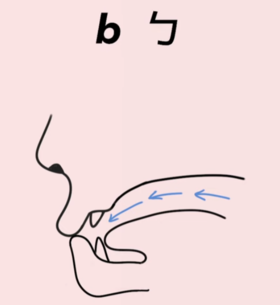
[Image: b – lips closed, no burst]Lips: Pressed together – block air completely, then release gently.
Airflow: Unaspirated (no strong puff).
Practice: 爸 (bà), 杯 (bēi)
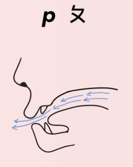
[Image: p – lips closed, strong burst]Lips: Same as b: press, then release.
Airflow: Strongly aspirated – more air pushed out.
Practice: 怕 (pà), 皮 (pí)
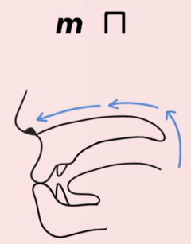
[Image: m – lips closed, nasal]Lips: Closed (like b/p), but air escapes through the nose.
Practice: 妈 (mā), 门 (mén)
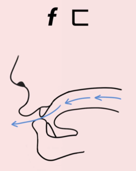
[Image: f – lower lip + upper teeth]Mouth: Lower lip touches upper front teeth lightly; air flows continuously.
Practice: 发 (fā), 饭 (fàn)
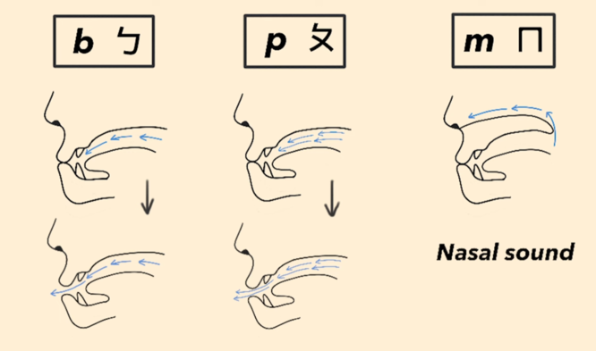
[Image: b p m comparison]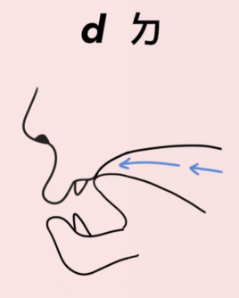
[Image: d – tongue tip on alveolar ridge]Tongue: Tip against the alveolar ridge (gums behind upper teeth).
Block air with tongue tip, then release gently (no puff).
Practice: 大 (dà), 灯 (dēng)
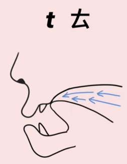
[Image: t – same position, strong burst]Tongue: Same as d – tip on alveolar ridge.
Airflow: Strong aspiration (more air pushed out).
Practice: 他 (tā), 天 (tiān)
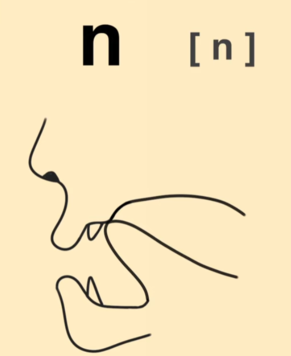
[Image: n – tip on alveolar ridge, nasal]Tongue: Same alveolar position, but air goes through the nose.
Practice: 你 (nǐ), 男 (nán)
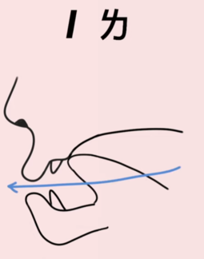
[Image: l – tip on ridge, air around sides]Tongue: Tip touches alveolar ridge, but air flows out over the sides of the tongue.
Practice: 了 (le), 来 (lái)
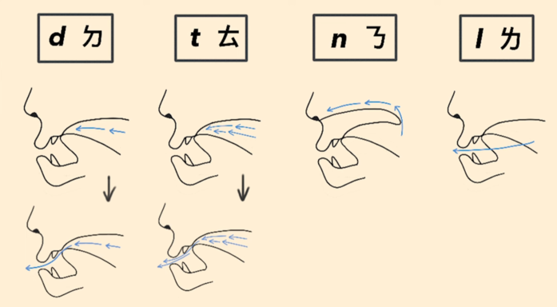
[Image: d t n l comparison]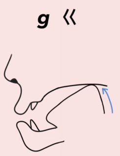
[Image: g – back of tongue raised, block]Tongue: Raise the back of the tongue against the soft palate.
Block air, then release gently (unaspirated).
Practice: 哥 (gē), 给 (gěi)
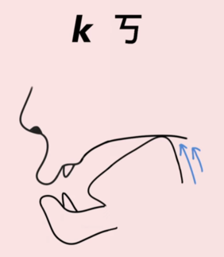
[Image: k – back raised, strong burst]Tongue: Same back-of-tongue position as g.
Airflow: Strong aspiration – a forceful release.
Practice: 可 (kě), 开 (kāi)
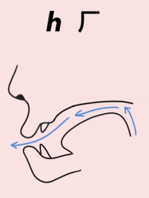
[Image: h – back raised, air flows]Tongue: Back raised close to soft palate, but no complete closure.
Air flows continuously – like a gentle rough breath.
Practice: 喝 (hē), 好 (hǎo)
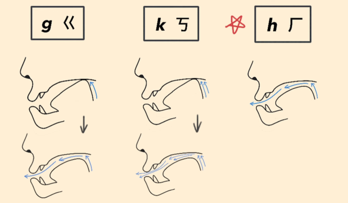
[Image: g k h comparison]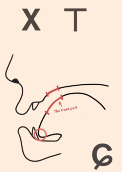
[Image: x – tip down, front raised]Tongue: Tip behind lower front teeth. Front of tongue raises toward hard palate.
Mouth: Spread wide, like a smile. Air flows continuously – no blockage.
Practice: 西 (xī), 小 (xiǎo)
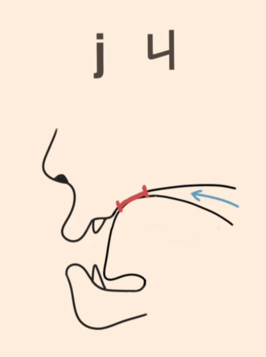
[Image: j – tip down, front blocked then released]Tongue: Same position as x. Press front of tongue against hard palate – block air, then release gently (unaspirated).
Practice: 鸡 (jī), 见 (jiàn)
Tongue: Same as j (block then release).
Airflow: Strong aspiration – push out more air.
Practice: 七 (qī), 去 (qù)
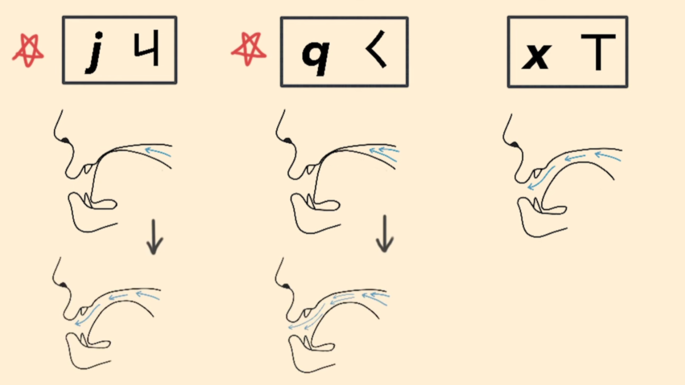
[Image: j q x comparison]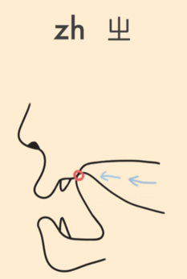
[Image: zh – curled tip against ridge]Tongue: Curl tip back to touch the hard palate just behind the alveolar ridge.
Block air, then release gently (unaspirated).
Practice: 知 (zhī), 中 (zhōng)
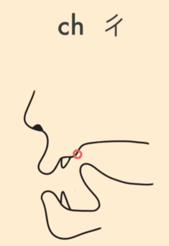
[Image: ch – same curled, strong burst]Tongue: Same curled position as zh.
Airflow: Strong aspiration – a forceful puff.
Practice: 吃 (chī), 车 (chē)
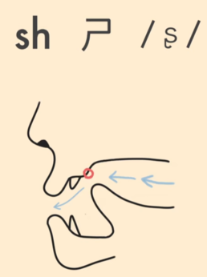
[Image: sh – curled close, air flows]Tongue: Curl tip close to the same spot, but do not touch. Air flows continuously.
Practice: 师 (shī), 上 (shàng)

Tongue: Same as sh (curled, close to palate).
Voice: Vibrate your vocal cords – the voiced partner of sh.
Practice: 日 (rì), 人 (rén)
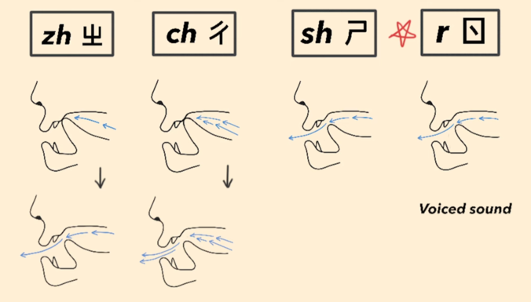
[Image: zh ch sh r comparison]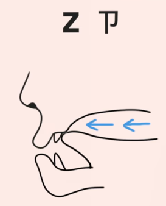
[Image: z – tip against upper teeth]Tongue: Tip touches the back of the upper front teeth.
Block air, then release gently (unaspirated).
Practice: 子 (zǐ), 早 (zǎo)
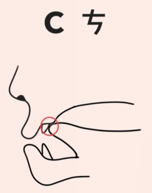
[Image: c – tip on teeth, strong burst]Tongue: Same dental position as z.
Airflow: Strong aspiration – a sharp puff of air.
Practice: 词 (cí), 草 (cǎo)
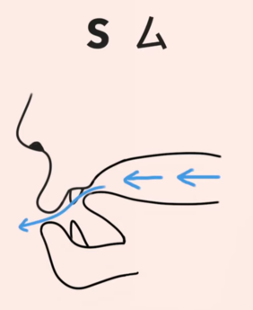
[Image: s – tip close to teeth, air flows]Tongue: Tip close to upper front teeth. Air flows continuously – no closure.
Practice: 四 (sì), 三 (sān)
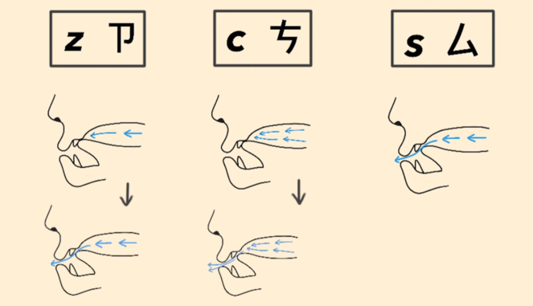
[Image: z c s comparison]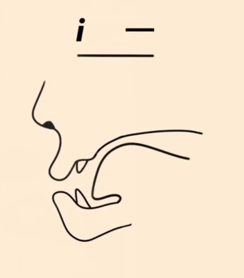
[Image: i vowel]Mouth: Spread lips wide, tense. Tongue: High front, tip behind lower teeth.
Practice: 一 (yī), 衣服 (yīfu)
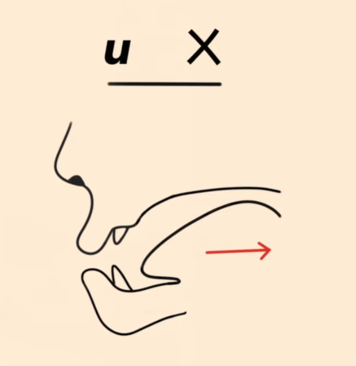
[Image: u vowel]Mouth: Small circle, protrude slightly. Tongue: Pull back, raise back toward soft palate.
Practice: 五 (wǔ), 不 (bù)
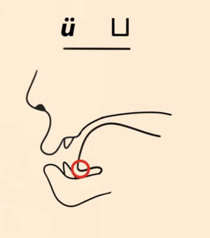
[Image: ü vowel]Tongue: Exactly like [i] (high front). Mouth: Round lips tightly – only difference from i.
Practice: 鱼 (yú), 去 (qù)
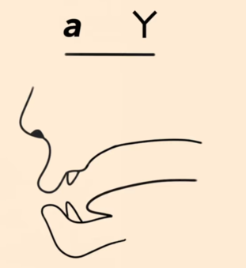
[Image: a vowel]Mouth: Open wide, jaw dropped. Tongue: Flat, low, central.
Practice: 妈 (mā), 大 (dà)
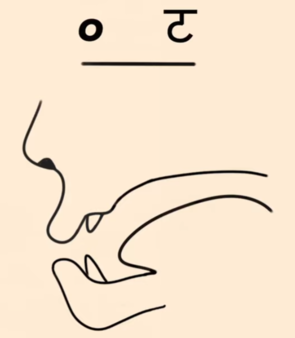
[Image: o vowel]Mouth: Rounded, less tight than [u]. Tongue: Pull back, raise mid‑back.
Practice: 我 (wǒ), 多 (duō)
When o follows b, p, m, f alone, it sounds like uo [wo].
Example: 潑水 (pō shuǐ) → "puo", 模仿 (mó fǎng) → "muo".
Front nasal (-n)
Tip touches alveolar ridge
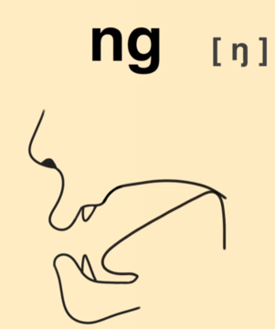
Back nasal (-ng)
Back of tongue raises to soft palate
| Final | IPA | How to pronounce | Example |
|---|---|---|---|
| en | [ən] | Start with schwa, then tip of tongue touches upper gums (front nasal). | 本 (běn) |
| eng | [əŋ] | Start with schwa, then back of tongue raises to soft palate (back nasal). | 风 (fēng) |
| in | [in] | Start with [i], then tip to alveolar ridge for -n. | 心 (xīn) |
| ing | [iŋ] | Start with [i], then raise back of tongue for -ng. | 请 (qǐng) |
| an | [an] | Start with open [a], then tip to alveolar ridge for -n. | 看 (kàn) |
| ang | [ɑŋ] | Start with back [ɑ] (wider mouth), then back tongue to soft palate. | 上 (shàng) |
When i- or ü- is followed by -an, the [a] shifts to [e]:
The 1–5 scale is a relative reference, not a musical note. Tone 1 is not a strained high “55” – it’s a comfortable mid‑to‑high‑mid flat tone. Tone 3 is mostly just a low tone, not a full fall‑rise.
| Tone | Realistic description | Duration | Intensity | Mnemonic |
|---|---|---|---|---|
| 1st (¯) | Mid‑to‑high‑mid flat, comfortable | Normal | Consistent | Steady held note |
| 2nd (ˊ) | Low → high, like “Huh?!” | Slightly longer | Quiet → Loud | “Huh?!” or “tea?” |
| 3rd (ˇ) | Low, often creaky; full fall‑rise rare | Longest | Quietest | Creaky “ah…” |
| 4th (ˋ) | High → low, sharp fall | Shortest | Loud → Quiet | “Stop!” or “Go!” |
| Neutral (·) | No fixed pitch; short and light | Short | Weak | Unstressed light beat |
In everyday speech the third tone is usually just a low tone that dips slightly – often with a creaky voice. The full 2→1→4 contour only appears at the end of a phrase or for emphasis.
When two third tones meet, the first becomes a half tone 2 (a short rise, not a full second tone):
Within a word, every third tone except the last becomes tone 2. Across word boundaries the chain may break.
| Context | Tone | Example |
|---|---|---|
| Isolation, numbers, end‑of‑word (唯一) | 1st | 一 (yī), 第一 (dì‑yī) |
| Before a 4th tone | → 2nd | 一半 (yí bàn) |
| Before 1st, 2nd, 3rd tone | → 4th | 一些 (yì xiē) |
| Between duplicated verbs | → neutral | 看一看 (kàn yi kàn) |
| Verb/adjective + measure word | → neutral | 等一下 (děng yi xià) |
| Context | Tone | Example |
|---|---|---|
| Most cases (alone, before 1st/2nd/3rd) | 4th | 不 (bù), 不知道 |
| Before another 4th tone | → 2nd | 不要 (bú yào) |
| Verb‑complement (potential) | → neutral | 對不起 (duì bu qǐ) |
| Reduplicated verb phrases | → neutral | 要不要 (yào bu yào) |
Over a sentence, the overall pitch drifts downward. A tone 1 at the end is lower than at the start. Pronouncing every syllable at textbook pitch sounds robotic.
Example: 媽媽罵馬 (māma mà mǎ) – the second “mā” and “mǎ” are lower than the first.
A high‑ending tone raises the start of the next syllable; a low‑ending tone lowers it. This is natural smoothing – don’t force it, just listen and imitate.
Surprise → raise whole range. Sadness → lower whole range. Anger → add extra fall at the very end. Never twist the contour of the tone itself.
Raise the pitch of the whole question and exaggerate the final tone contour. Never add an English‑style rise.
Contrast: 這是水。 (normal) vs. 這是水？ (higher register, magnified low tone)
| After tone… | Neutral tone pitch | Example |
|---|---|---|
| 1st | Lower than tone 1 | 媽媽 (māma) |
| 2nd | Lower; tone 2 cuts off mid‑rise | 什麼 (shénme) |
| 3rd | Higher (because half‑3 is very low) | 椅子 (yǐzi) |
| 4th | Slightly above the fall’s end | 是的 (shìde) |
The neutral tone is an unstressed light beat. Make it short and light, and you’ll be understood.
Click any card to open the video on YouTube 🎬